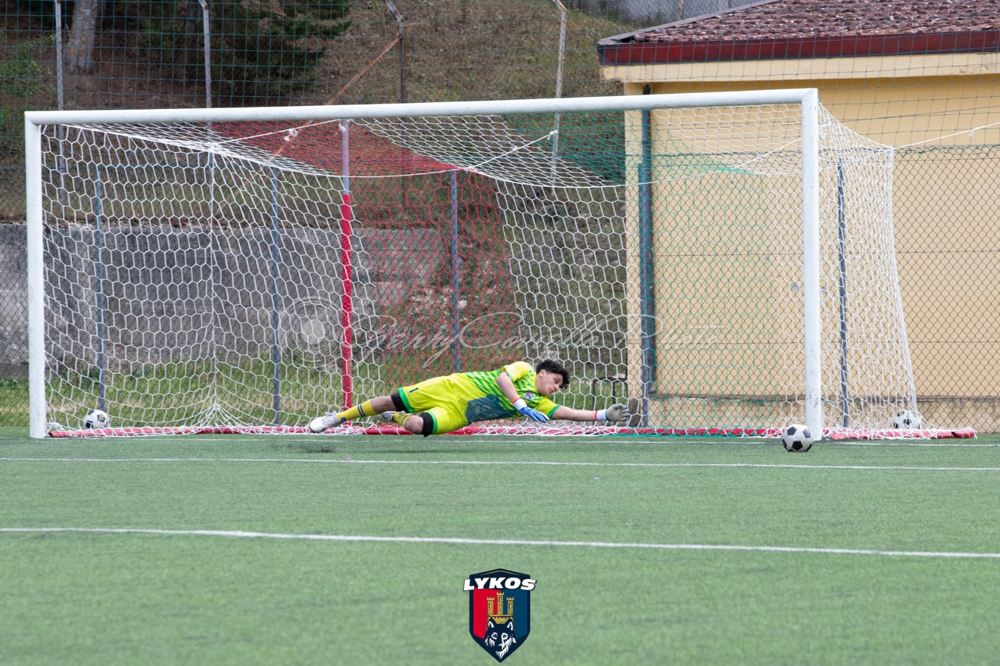

Leggi L'artricolo :Clicca Qui
| Nome | Cognome | Anno | Ruolo | Altezza | Nazionalità |
|---|---|---|---|---|---|
| Alessio Pio | Lo Tito | 2007 | Portiere | 178 cm | Italiana |
|

|
Alessio Pio Lo Tito è nato a Potenza il 12 luglio 2007. Fin da piccolo, ha mostrato un grande amore per il calcio, iniziando a giocare come portiere all'età di 6 anni. La sua passione per il ruolo è cresciuta di giorno in giorno, alimentata dalla voglia di migliorarsi e dall'emozione di difendere la propria porta. Durante gli anni, Alessio ha affinato le sue abilità grazie a costanti allenamenti e partecipando a varie competizioni giovanili. La sua dedizione, i riflessi pronti e una buona capacità di lettura del gioco lo hanno reso un portiere promettente. Oggi, Alessio Pio continua a inseguire il sogno di una carriera nel calcio, determinato a lasciare il segno nel mondo sportivo.
Seguite il mio Instagram: